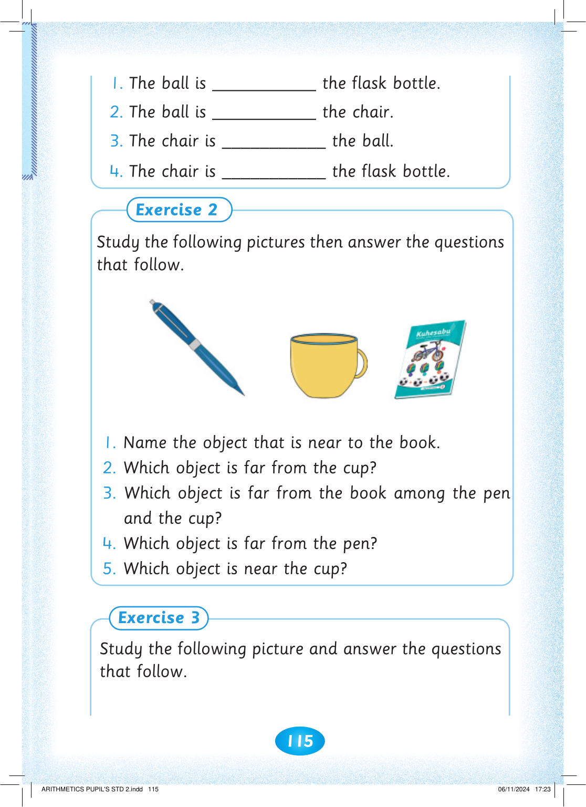
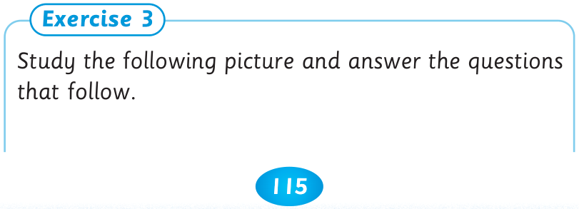
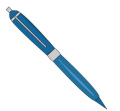
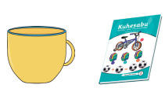
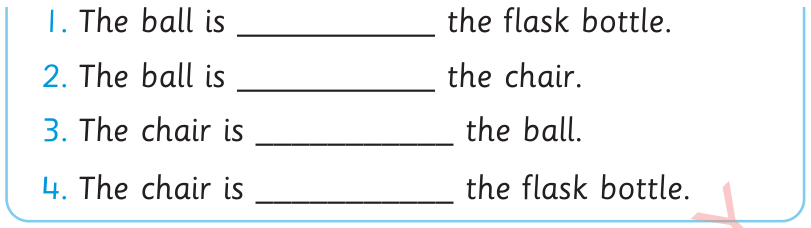

115


1. The ball is ___________ the flask bottle.


2. The ball is ___________ the chair.


3. The chair is ___________ the ball.
4. The chair is ___________ the flask bottle.
Exercise 2
Study the following pictures then answer the questions that follow.


1. Name the object that is near to the book.
2. Which object is far from the cup?
3. Which object is far from the book among the pen and the cup?
4. Which object is far from the pen?
5. Which object is near the cup?
Exercise 3
Study the following picture and answer the questions that follow.



ARITHMETICS PUPIL'S STD 2.indd 115
06/11/2024 17:23